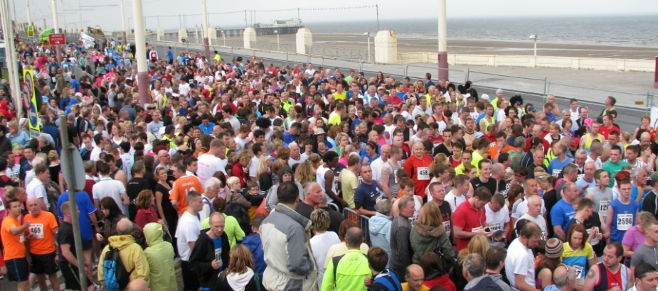

“
For the last 30 years, the Fun Run has been organised by a small group of friends with support from Beaverbrooks and has raised over £1.5 million for a whole host of charities.
From 2013 the Beaverbrooks Blackpool 10K Fun Run will be in partnership with Trinity Hospice. The event organisation will be in the capable hands of the team at Trinity and the money raised will support them in providing specialist palliative care for adults and children across Blackpool, Wyre & Fylde.
We wish the fundraising team at Trinity Hospice every success with the event and thank all the people who have supported the Fun Run over the last 30 years. We look forward to seeing you all again on 12th May!
We are delighted to now be working in partnership with the team at Trinity Hospice who rely on the generosity of the local community to meet their annual running costs. They need to raise £5 million each year to keep their doors open and ensure their compassionate care remains free of charge to all who need it. Trinity Hospice and Brian House Children's Hospice touch so many local families and with your help they can continue their vital work. Thanks for your support.
The Beaverbrooks Blackpool 10K Fun Run first started in 1982 and has grown in popularity ever since. We are overwhelmed with the support we get from local people every year and we have raised well in excess of £1.5 million for a host of charities in the local area and beyond. In addition, many runners have supported their own charities which organisers estimate takes the total figure to around £3 million. Your support has been fantastic and we would like to say a massive THANK YOU to all our supporters.
| Blackpool Victoria Hospital | 48.32 |
|---|---|
| Royal Manchester Children's Hospital | 4.13 |
| NSPCC | 4.37 |
| Roy Castle | 2.15 |
| Trinity and Brian House Children's Hospice | 20.91 |
| Cancer research | 14.49 |
| Royal Preston Cancer Unit | 5.63 |